Answer + degree — 先给态度，别只说 yesYes, I do — I really like it. 或 Not really, to be honest.
Why / how often — 一个理由或一个频率I read almost every night before bed, mostly to stop looking at my phone.
One concrete example — 一件你自己的事Last month I picked up a novel for the first time in a year and finished it in three days.
老师要的不是 yes 或 no。老师问 Do you like to read?，你答 Yes. 然后停住，他就只能换下一个问题——35 个问题就变成 35 次冷场。上面三句里最值钱的是第三句：它给老师一个可以追问的东西（哪本书？什么时候？为什么？），话就续下去了。
02三种问法，五档答法
课本 35 个问题的句式只有三种，答法只有五档。这两张表过一遍，剩下的就是换话题词。
A · 问法只有三种，课本按顺序分成三段
句式
本课例子
在问什么
你怎么接
Do you like to do…? 第 1–15 题
to read / to travel / to sleep late
某个动作或习惯
to 后面必须是动词原形。答的时候可以直接 Yes, I do. 收住
Do you like doing…? 第 16–25 题
smoking / playing golf / writing letters
和上面几乎一样，doing 更偏「这件事本身」
两种都对，日常口语里可以互换，不用纠结
Do you like + noun? 第 26–35 题
meat / raw fish / money / classical music
某样东西本身
Yes, I love it. —— 用 it / them 接住，复数名词要用 them
B · 答法只有五档，先挑好档位再说话
档位
英语怎么说
什么场合用
非常喜欢
I love it. / I'm crazy about it. / I'm a big fan.
真的爱，说的时候可以带表情。love 比 like 重一档。
喜欢
Yes, I really like it. / I'm into it these days.
最安全的一档，绝大多数问题停在这里就够。
一般
It's okay. / I don't mind it. / It's not really my thing.
不想说喜欢又不想得罪人。not really my thing 是最好用的一句。
不太喜欢
Not really, to be honest. / I'm not a big fan.
to be honest 加在后面，语气立刻软下来。
讨厌
I can't stand it. / I really don't care for it.
别轻易说 I hate it，那个词在口语里很重，除非真的厌恶。
C · 课本例题：一段「满分」答案长什么样
课本 p.24 给了例题和一段完整的示范答案。注意它不是「Yes, I like watching TV」——它先说过去，再说现在，最后一句收尾。这就是第三档答法的原型。
Example
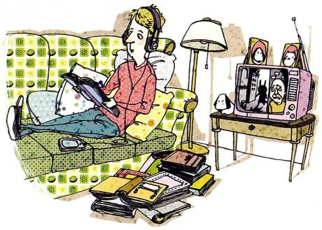
Do you like to watch TV?
What you seeA man stretched out on a patterned sofa with headphones on, flipping through a book. There's a small TV on a side table across from him, a floor lamp, and piles of books and magazines on the floor.
What it means问你喜不喜欢看电视。课本的示范答案分三步走：过去（I used to…）→ 现在（But these days I hardly ever…）→ 一句收尾（I guess I'm bored with…）。这个「以前 / 现在」的对比，比单纯说 like 高级得多。
Say it like thisI used to watch a lot of television. I could do that while I was doing something else like studying or painting. But these days I hardly ever turn the TV on. I find it much more enjoyable to go out or read a book or listen to good music. I guess I'm bored with watching TV.
这段话里能直接搬走的四件东西。I used to…（以前常做，现在不做了）；these days（最近这段）；hardly ever（几乎不）；I find it much more enjoyable to…（我觉得……有意思多了）。四句里有三句是「时间对比」，这就是把一句短答撑成一段的方法。
最容易踩的坑：Do you like…? 和 Would you like…? 是两件事。 Do you like coffee? = 你平时喜不喜欢喝咖啡（长期偏好）→ 答 Yes, I do. Would you like some coffee? = 现在要不要来一杯（当次邀请）→ 答 Yes, please. / No, thanks.
用 Yes, I do 去答 Would you like…? 是中式英语里最常见的错，老师一听就知道。
03三十五个问题：图里画什么，三档怎么答
每张卡三块：What you see 是照着图说话，What it means 说清这个问题到底在问什么，Say it like this 给三档答案——① 一句短答，② 两句加原因，③ 加一个具体例子或对比。练习就一条：先只练 ①，练到不假思索；再往上加。别一上来就背 ③，会背得不像自己。
01
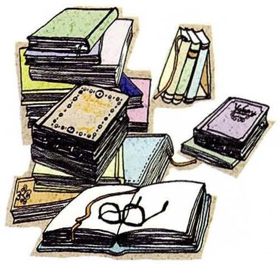
Do you like to read?
What you seeA tall pile of books beside an open one, with a pair of glasses resting on the page. A few more books are standing upright, and a ribbon bookmark hangs out of the stack.
What it means问你喜不喜欢读书这件事，不是问你读没读过。答的时候最好带上读什么，否则老师一定追问。
Say it like this①Yes, I do. I read every night before bed. ②Yes, I really like it — it's the only half hour of the day when I'm not looking at a screen. ③I read a lot as a kid, but in grad school I mostly read papers, so I stopped. Last month I picked up a novel for the first time in a year and finished it in three days.
02
Do you like to travel?
What you seeA folded map with a globe printed on it, a pocket compass, a toy airplane on top, a couple of photos of famous places, and a little pink camera at the bottom.
What it means问旅行这件事本身，不是「你上次去哪儿玩了」。想聊具体的地方，那是下一句。
Say it like this①Yes, I love it. ②Yes, I love it — I'd rather spend money on a train ticket than on anything else. ③I usually travel in winter, when the lab is quiet. Last January I took a night train to Xi'an and just walked around the old city for two days with no plan at all.
03
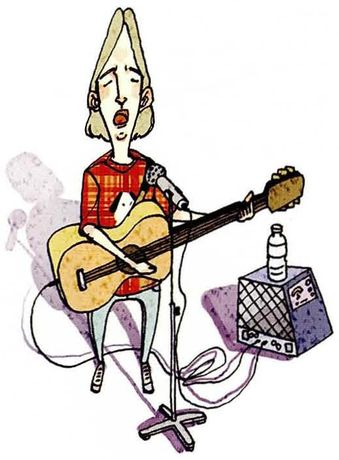
Do you like to sing?
What you seeA long-haired singer with eyes closed, singing into a mic on a stand, an acoustic guitar across the chest, and a small amplifier on the floor with a bottle of water on top.
What it means问唱歌。别答成「喜欢听歌」——sing 和 listen to music 是两回事，混了老师会立刻听出来。
Say it like this①Yes, but only in the shower. ②Not really. I like music, but I can't sing at all, and people notice. ③My friends drag me to KTV maybe twice a year. I always say I won't sing, and then I end up doing the old songs everyone knows.
04
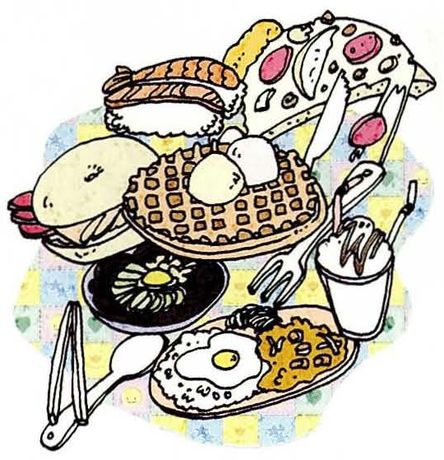
Do you like to eat?
What you seeA table crowded with food from all over — a hamburger, a waffle with scoops of ice cream, a slice of pizza, sushi, a bowl of soup, a fried egg with curry rice, and a drink with a straw. There are chopsticks, a spoon and a fork too.
What it means问题看着幼稚，其实在问「你是不是一个爱吃的人」。只答 yes 太浪费了，加点具体的。
Say it like this①Yes, I love eating. ②Yes, definitely. Food is honestly the best part of my day. ③I'm the person in my lab group who knows every cheap place within two blocks of campus. I basically plan my day around lunch.
05
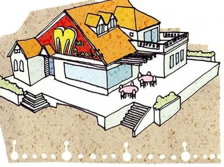
Do you like to eat out?
What you seeA restaurant seen from outside — a red front with a big arch logo, a yellow roof, and small tables and chairs out on the terrace.
What it means问下馆子。eat out 是固定说法，不能说 eat outside（那是在户外吃）。
Say it like this①Yes, quite a lot. ②Yes, but I cook more than I eat out, because eating out every day gets expensive. ③Maybe twice a week. There's a noodle place near my dorm that's open until two in the morning, and after a late lab meeting that's usually where I end up.
06
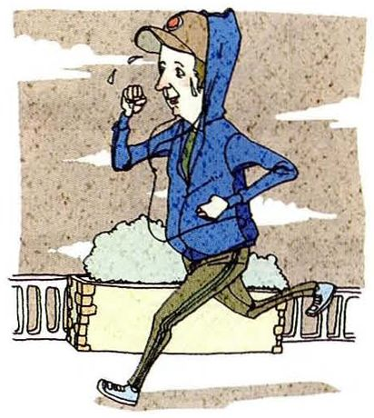
Do you like to exercise?
What you seeSomeone jogging in a hoodie and a baseball cap, sweating, past a park railing with bushes behind them.
What it means问运动。口语里更常说 work out，exercise 更像课本词。
Say it like this①Yes, but not as often as I should. ②Yes, I do. If I don't move at all for a week, I sleep badly and I get grumpy. ③I run three times a week, usually at night around the campus track. It's more about clearing my head than about getting fit.
07
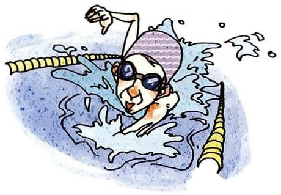
Do you like to swim?
What you seeA swimmer doing freestyle in a lane pool, wearing a cap and dark goggles, with a yellow lane rope on each side and water splashing around them.
What it means问游泳。名词是 swimming，过去式是 swam——说过去的事时别用错。
Say it like this①Yes, I love swimming. ②Yes, I do — it's the only sport where I don't feel like I'm exercising. ③I learned late, at about twelve, and I was scared of deep water for years. Now I go to the pool near my campus maybe once a week in summer.
08
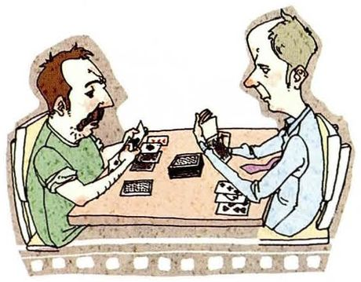
Do you like to play cards?
What you seeTwo men facing each other across a table, each holding a hand of cards close to his chest. There's a deck in the middle and a few cards laid out face up.
What it meansplay cards 是泛指打牌；说具体的就是 play poker / play mahjong。
Say it like this①Not really, to be honest. ②Not really. I never remember the rules, so I always lose and then I feel bad about it. ③My family plays mahjong every Spring Festival and I'm the one who keeps asking what counts as a win. I mostly just eat and watch.
09
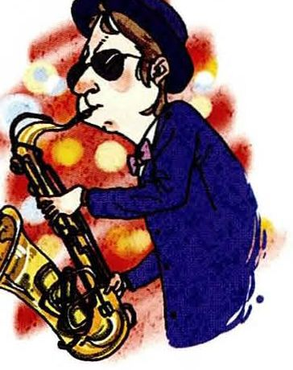
Do you like to play any musical instrument?
What you seeA man in a dark blue suit, hat and sunglasses playing a saxophone, with warm stage lights glowing behind him.
What it means问乐器。注意 instrument 的重音在第一音节 /ˈɪnstrəmənt/，很多人读成 in-STRU-ment。
Say it like this①Yes, I play the piano a little. ②Yes — I took piano lessons for about six years as a kid, but I've basically stopped. ③I can still play two or three pieces from memory. Whenever I go home I sit down and play one, and my mom says the same thing every time: you should practice more.
10
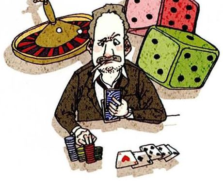
Do you like to gamble?
What you seeA man in a suit with a cigarette in his mouth, sitting behind stacks of poker chips and holding his cards, a roulette wheel over his shoulder and two huge dice next to him.
What it means问赌不赌。课本脚注把 gamble 解释成「拿钱或有价值的东西去冒险，赌自己能赢更多或者猜对」。这题答 no 比答 yes 好说，不用不好意思。
Say it like this①No, never. ②No. I don't like losing money, and I'm not lucky, so it's not much fun. ③I tried a slot machine once in Macau with about fifty yuan. I lost it in two minutes and thought, well, that's enough of that.
11
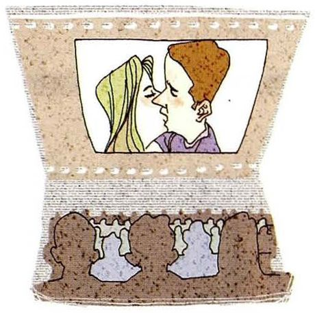
Do you like to watch movies?
What you seeA strip of film with a couple about to kiss on the screen, and below it the dark silhouettes of an audience sitting in rows.
What it means问看电影。注意区分 watch movies（在家看）和 go to the movies（去电影院）。
Say it like this①Yes, I love movies. ②Yes, but I watch them at home on my laptop, not at the cinema. I can't sit still for two hours in a theater. ③I go through phases. In exam weeks I watch the same three comedies over and over, because I don't have to think about them.
12
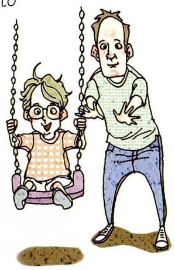
Do you like to play with children?
What you seeA man pushing a small child on a swing. The child is wearing glasses and a patterned shirt and is laughing, hands gripping the chains.
What it means问跟小孩玩。play with children / kids 是固定搭配，别漏掉 with。
Say it like this①Yes, I do. ②Yes, I like kids — they're exhausting, but you can't be in a bad mood around them. ③My cousin has a four-year-old and I see him maybe once a month. He calls me by my nickname and expects me to carry him everywhere, and honestly I don't mind.
13
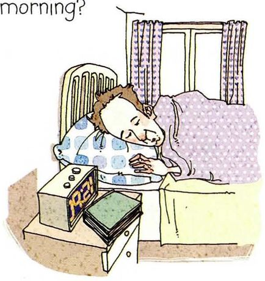
Do you like to sleep late in the morning?
What you seeSomeone fast asleep in bed with a smile, head sunk into the pillow, a digital alarm clock and a stack of books on the nightstand, and daylight coming in through the window.
What it means问睡懒觉。sleep late 是起得晚；更口语的说法是 sleep in。
Say it like this①Yes, way too much. ②Yes, I do, and it's a problem — if nothing forces me up, I'll sleep until ten. ③On weekdays I'm up at seven, so on Saturday I sleep until ten or eleven and then the whole day feels short. My roommate is the opposite; she's up at six even on weekends.
14
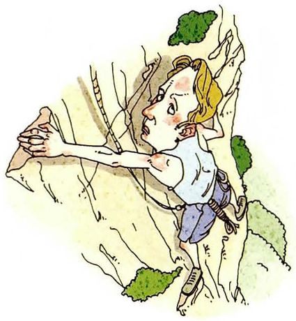
Do you like to go to the mountains?
What you seeA climber hanging on a steep rock face, reaching up for a hold, with a rope and a harness at the waist and patches of green bushes on the rock.
What it means问去山里。可以说 go to the mountains / go hiking / go climbing，三个意思不完全一样。
Say it like this①Yes, I love it. ②Yes. The city is loud, and up there the only thing you can hear is wind. ③My friends and I climbed Mount Tai last summer to see the sunrise. We started at midnight, and by the top I was too tired to care about the view — but I'd do it again.
15
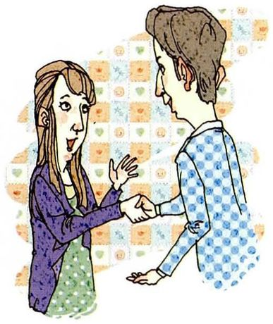
Do you like to meet new people?
What you seeA woman and a man shaking hands and talking, both smiling, with a patterned background behind them.
What it means表面问爱好，其实在问你内向还是外向。这题答 It depends 完全不算躲，是真实答案。
Say it like this①It depends, honestly. ②I like meeting new people, but I'm not good at starting the conversation. Once someone else talks first, I'm fine. ③At conferences I usually stand near the coffee table, because people come to you there and you don't have to break into a group.
16
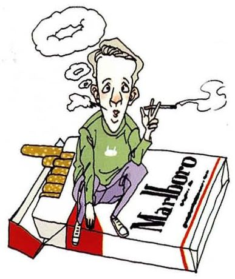
Do you like smoking?
What you seeA thin man sitting on top of a giant cigarette pack, holding a lit cigarette between two fingers, smoke curling above his head.
What it means注意这里是 smoking 不是 to smoke——问的是「抽烟这件事、这个习惯」。回答干脆一点最好。
Say it like this①No, I don't smoke. ②No, I've never smoked. I don't like the smell, and it's expensive. ③My grandfather smoked for forty years and quit at sixty. Watching him try to stop was enough for me.
17
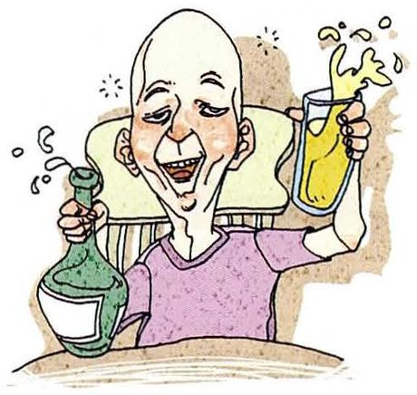
Do you like drinking?
What you seeA bald man laughing with his eyes half closed and red cheeks, a green bottle in one hand and a glass of beer splashing over in the other.
What it meansdrinking 单独用的时候特指喝酒，不是喝水。中文「你喜不喜欢喝酒」正好对上。
Say it like this①Yes, occasionally. ②I like a beer with dinner sometimes, but I don't drink much — the day after is not worth it. ③At lab dinners there's always baijiu and someone always tries to get me to drink more. I usually have one glass and then switch to tea.
18
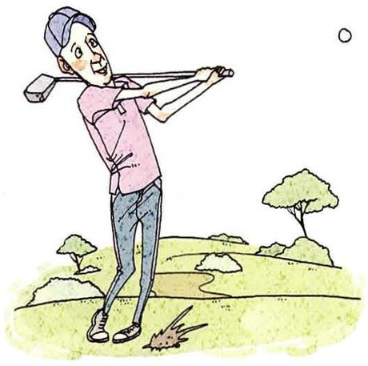
Do you like playing golf?
What you seeA golfer in a cap and pink shirt just finishing his swing, the club wrapped behind his head. The ball is already flying off in the distance, and a chunk of grass is flying up where he hit the ground.
What it means问高尔夫。球类运动前不加冠词：play golf / play tennis / play basketball，不是 play the golf。
Say it like this①No, I've never tried it. ②No, I've never played. It always looked like a rich person's sport to me. ③There's a driving range near my campus and it's actually cheap at night. A friend took me once — I hit maybe three balls properly out of fifty.
19
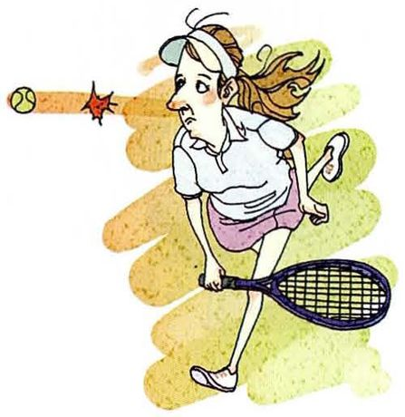
Do you like playing tennis?
What you seeA woman in a white visor and skirt, racket down by her knee. A ball has just shot past her head, and she's turned to stare at it with a worried face — she clearly missed it.
What it means问网球。同样是 play tennis，和第 18 题的 golf 一个结构。
Say it like this①Yes, I like it a lot. ②Yes, I do. It's the one sport where I don't notice how tired I am. ③I played a lot in high school, then stopped for years. Last month I played with a classmate and my arm hurt for three days — but I want to go again.
20
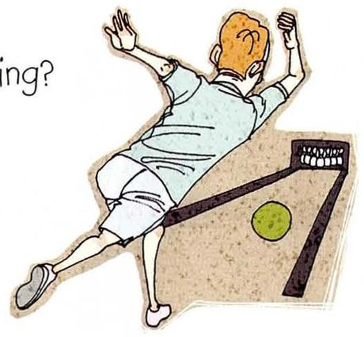
Do you like bowling?
What you seeA bowler seen from behind, sliding forward with both arms flung up in the air, just after rolling a green ball down the lane toward the pins.
What it means问保龄球。bowl 的 ow 读 /oʊ/（像 go），不读 /aʊ/（像 how）——读成后者就变成「鞠躬」的 bow 了。
Say it like this①Yes, it's fun. ②Yes, but I'm terrible at it. I'm happy if I break a hundred. ③We went bowling for a labmate's birthday last term. I came last, and I still had a good time, mostly because everyone else was bad too.
21
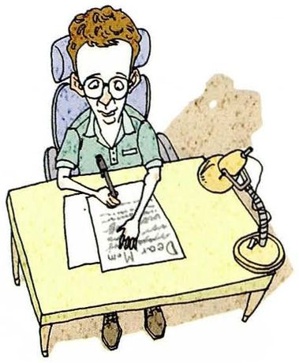
Do you like writing letters?
What you seeA man in glasses sitting upright at a desk, writing a letter by hand — you can read "Dear Mom" at the top of the page — with a desk lamp beside him.
What it means问写信。writing letters 是手写的信；writing emails 是邮件，别混。
Say it like this①Not really. I can't remember the last time I wrote one. ②Not really. I write emails all day for my advisor, so the idea of writing more on paper doesn't appeal to me. ③I did write letters in middle school — we had to write to a pen pal. I still have one of the replies in a box at home.
22
Do you like shopping?
What you seeA woman pushing a shopping cart piled high with boxes, bags and clothes, and more shopping bags hanging from her other arm.
What it means问逛街购物。注意 go shopping（逛街）和 do the shopping（采购日用品）不是一回事。
Say it like this①Not really, no. ②Not really. I know what I want before I go in, so I'm in and out in ten minutes. ③I do all my shopping online. The only thing I buy in person is food — the market near my dorm on Sunday morning, when everything is cheap.
23
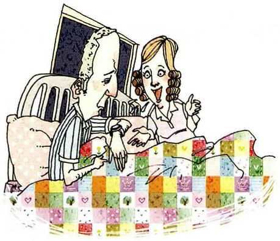
Do you like talking?
What you seeA couple sitting up in bed under a bright patchwork quilt, a dark window behind them. The woman is talking excitedly with her hands, and the man is looking at his watch — he clearly wants to go to sleep.
What it means问爱不爱聊天。这题其实在问性格——你是说得多的人，还是听得多的人。
Say it like this①Yes, probably too much. ②Yes, I like talking — I think out loud, so I need someone to talk to or I can't decide anything. ③My roommate and I end up talking in the kitchen until midnight at least twice a week, and then we both regret it in the morning.
24
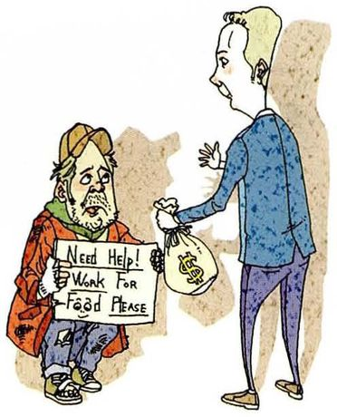
Do you like helping those in need?
What you seeA man in a suit handing a small bag of money to a man sitting on the ground, who is holding a cardboard sign that reads "Need Help! Work For Food Please".
What it means课本脚注：in need = 缺吃少穿、缺生活必需品。those in need 是「需要帮助的人」，偏书面但非常常用。别答成空话，给一个你真做过的事。
Say it like this①Yes, I try to. ②Yes, but I'd rather give money to an organization than to someone on the street, because I never know what happens to the cash. ③I volunteer at a weekend tutoring program for kids from migrant families. I go maybe twice a month, and it takes three hours, and I always leave in a better mood than I came.
25
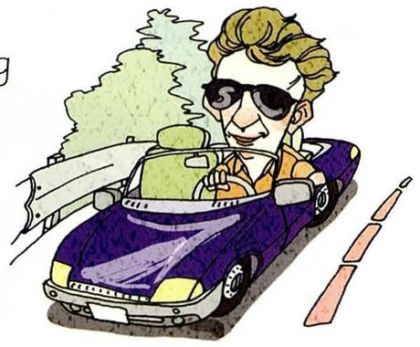
Do you like riding in a car?
What you seeA man in sunglasses driving a purple convertible, his hair blown back, trees passing on the left and road markings on the right.
What it means问坐车，不是开车。riding in a car 是当乘客，driving 是自己开——差别很大。
Say it like this①Yes, I like it. ②Yes, as long as I'm not the one driving. I like looking out of the window. ③When I go home for the holidays my dad drives and I sit in the front, and we talk for four hours. That's the part I look forward to, not the destination.
26
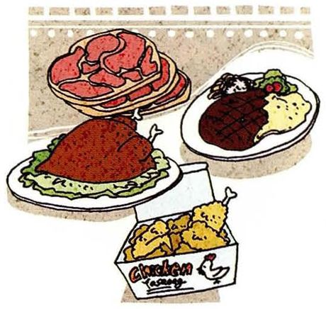
Do you like meat?
What you seeA stack of sliced raw meat, a whole roast chicken on a bed of lettuce, a steak with mashed potatoes, and a box of fried chicken in front.
What it means问肉。meat 是不可数名词，没有 a meat，也没有 meats（除非说不同的肉类品种）。
Say it like this①Yes, I love meat. ②Yes, I do — I'd have a hard time being vegetarian. ③I eat meat almost every day, but it's usually chicken or pork in a stir-fry, not a big steak. Beef is expensive, so that's for special occasions.
27
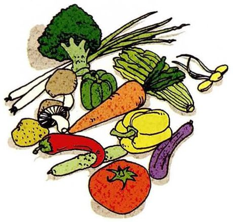
Do you like vegetables?
What you seeA heap of vegetables — broccoli, green onions, a carrot, green and yellow bell peppers, mushrooms, a potato, an eggplant, a cucumber, a red chili, a Chinese cabbage and a big tomato in front.
What it means问蔬菜。vegetables 读 /ˈvedʒtəblz/，只有三个音节，中间那个 e 是不发音的。
Say it like this①Yes, I do, actually. ②Yes, I like them. I didn't as a kid, but now a meal without vegetables feels wrong. ③I eat mostly vegetables at the canteen because they're the cheap part, and the meat there isn't great. My mom still doesn't believe I order broccoli on purpose.
28
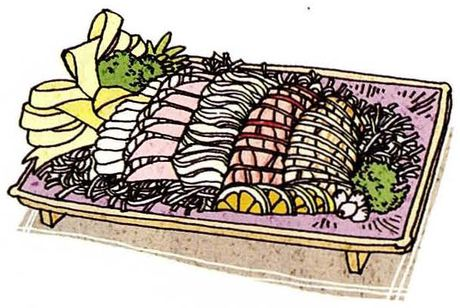
Do you like raw fish?
What you seeA platter of sliced raw fish laid out in neat rows, with lemon slices, shredded vegetables and green garnish along the edges.
What it means问生鱼片。raw = 生的、没煮过的。想说得更具体就用 sashimi，英语里直接借用了这个词。
Say it like this①Yes, I love it. ②Yes, I do. I know some people can't get past the idea of raw fish, but I've never had a problem with it. ③I didn't eat it until I was about twenty — my parents don't like it at all. Now sashimi is the one thing I'll actually pay for.
29
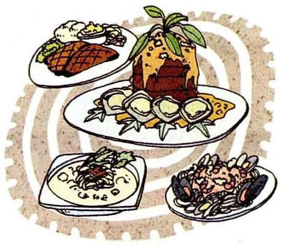
Do you like Western food?
What you seeFour Western dishes on a table — a steak with mashed potatoes, a big platter of oysters around a tall stacked main dish, a bowl of creamy soup, and a plate of mussels.
What it means问西餐。Western food 是个很笼统的说法，所以答的时候一定要说具体是哪一种，否则等于没答。
Say it like this①Yes, some of it. ②I like it, but I couldn't eat it every day — after a week of bread and cheese I start craving rice. ③I like Italian food, pizza and pasta and that kind of thing. But the Western food near my campus is basically fried chicken, so I don't go often.
30
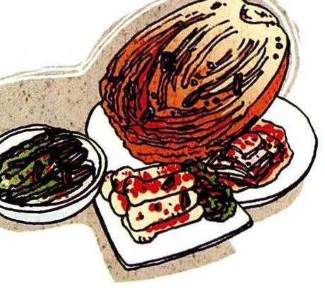
Do you like kimchi?
What you seeA whole napa cabbage kimchi on a plate, a bowl of dark green vegetable kimchi beside it, and a plate of sliced radish kimchi.
What it means问韩式泡菜。从这一题和第 32 题的乐器看，这套教材原本是写给韩国学生的——对他们来说 kimchi 就是家乡菜。换到你身上，老师很可能顺势问 What's a dish from your hometown?，提前备一个。
Say it like this①Yes, I do. ②Yes, I like it — it's spicy and sour at the same time, which is not what I expected the first time. ③I eat it with instant noodles sometimes. My roommate is from Yanbian, so she makes it at home and it's much better than the supermarket kind.
31
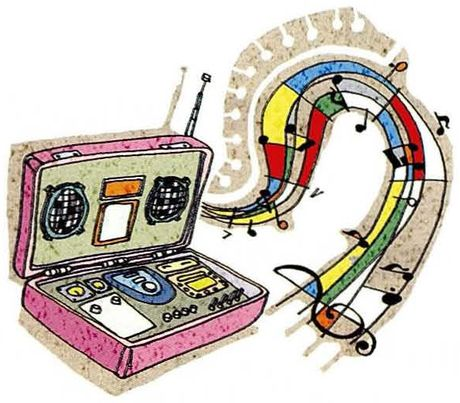
Do you like music?
What you seeA pink boombox with its lid open, and a big treble clef with rainbow-colored notes flying out of the speakers.
What it means问音乐。几乎人人都答 yes，所以答完必须说听什么，不然这个问题的分就白丢了。
Say it like this①Yes, all the time. ②Yes. I have something on from the moment I wake up — I can't work in silence. ③Mostly hip-hop and some old rock. I use the same three playlists for studying, and by now they're so familiar that I don't even hear them.
32
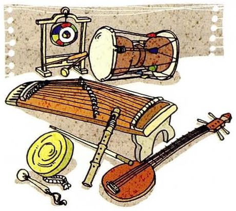
Do you like traditional music?
What you seeA set of East Asian traditional instruments — a long zither with many strings, an hourglass-shaped drum, a gong hanging on a wooden stand, a bamboo flute, a small brass cymbal, and a lute with a round body.
What it means问传统音乐。图里画的看样子是韩国传统乐器（那个沙漏形的鼓是韩国长鼓），但你答的时候说你自己的就行，记得加上国家：Chinese traditional music。
Say it like this①Yes, some of it. ②I like it, but I don't listen to it by choice — I mostly hear it when I go home. ③My grandmother used to have opera on the radio all afternoon. I couldn't stand it as a kid, and now some of those tunes make me think of her kitchen.
33
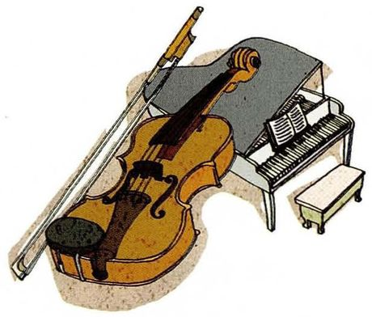
Do you like classical music?
What you seeA violin lying on its side with its bow beside it, and a grand piano behind it with sheet music open on the stand and a small bench in front.
What it means问古典音乐。classical 读 /ˈklæsɪkl/，三个音节、重音在 clas-，不是「克拉西考」。
Say it like this①Yes, actually. ②Yes, I do. I listen to it when I need to concentrate, because there are no words to distract me. ③I'm not an expert. I know maybe five pieces, and I put them on when I'm writing. My advisor does the same thing, which made me feel less weird about it.
34
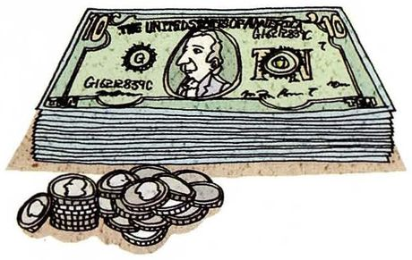
Do you like money?
What you seeA thick stack of dollar bills with a pile of coins sitting in front of it.
What it means这是本课唯一一个半开玩笑的问题。老师想听的是一句有态度的回答，不是一声 yes——所以这题更该用第二、第三档答。
Say it like this①Who doesn't? ②Yes, obviously — but I'd rather have time than more money right now. ③As a grad student my stipend covers rent and food and not much else, so yes, money is on my mind. But I didn't go into research for the salary, so it's a trade I already accepted.
35
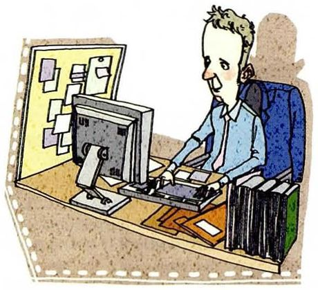
Do you like your current job?
What you seeA man in a shirt at a desk in front of a computer, looking tired, a board covered with sticky notes behind him and stacks of folders beside him.
What it means课本脚注：current = 现在的、当前的。你还是学生，所以这题对你等于「你喜不喜欢你现在做的事 / 你的专业」。这是全部 35 题里最容易被追问的一题，值得准备到第三档。
Say it like this①Yes, mostly. ②Yes, I do. It's hard and the hours are bad, but I'm working on something I actually chose. ③The parts I like are the experiments that work and the people in my lab. The parts I don't like are writing reports at midnight before a deadline. On balance, I'd still pick it again.
So what do you actually do when you're not working?
Honestly, not much. I run three times a week and I read before bed. Everything else is either the lab or my phone, which I know is not a great answer, but it's the true one.
这题是把 35 个问题收成一段的机会。Honestly, not much 开头，听起来真实，不像是背过的。which I know is not a great answer, but it's the true one 是很自然的一句自嘲。
Is there anything you used to like but don't anymore?
Yeah — video games. I used to play for hours every night in college, and now I can't sit through twenty minutes of one. I think it's because my work is on a screen too, so by the evening I just want to look at something that isn't moving.
结构是「是什么 → 以前怎样 → 现在怎样 → 一句解释」。I used to… + and now I can't… 这个对比是本课第 02 节例题的原型，用熟了随时能套。
Would you like something to drink?
Yes, please — some tea would be great. Thanks.
No, thanks. I'm fine for now.
这是 Would you like…?，不是 Do you like…?。只能答 Yes, please / No, thanks，答 Yes, I do 就错了。老师会专门试你这一点。
Is there any food you absolutely can't stand?
Cilantro, if that counts. I know it's a genetic thing — for some people it tastes like soap, and I'm one of them. My friends think I'm being difficult, but I'm really not choosing it.
absolutely can't stand 比 don't like 强得多。后半句给了一个不是「挑食」的理由，话立刻有内容了——这就是第三档答法的价值。
Do you think young people in China eat more Western food than before?
More than before, definitely, but I don't think it's replacing Chinese food. What I see on campus is people eating Western food as a treat — a burger on a Friday — and then going back to rice and noodles the rest of the week.
被问「你觉得……吗」，先给一句立场（More than before, definitely），再用 but I don't think… 转一下，最后给你的观察。有立场、有限定、有例子，这就是一个完整的口头观点。
If you had a free weekend and money wasn't an issue, what would you do?
I'd take a train somewhere with mountains and stay one night. Nothing ambitious — just walk, eat something local, and not check my phone. I'd probably bring one book and finish it on the way back.
Which of these questions was hardest to answer? Why?
The gambling one, probably. Not because of the English — I just don't have an opinion about it, so I had nothing to say. The easy ones are the ones where I already have a story.
这是一道「元问题」，也是本课最值得记住的一句话：The easy ones are the ones where I already have a story. 说出来，等于告诉老师你已经知道该怎么练了。
06这节课最容易犯的错
下面每一条都是中文直接翻过去会踩的坑。看出来错在哪，比多背十个单词管用。
✗I very like it. ✓I really like it.
中文「我很喜欢」的「很」不能翻成 very——very 不能直接修饰动词。修饰动词用 really / really do，或者把 very 挪到形容词前面：very good。
✗A: Do you like coffee? B: Yes, I like. ✓Yes, I do. / Yes, I like it.
两种都对：简答用助动词 Yes, I do；要带宾语就 Yes, I like it。like 是及物动词，后面不能空着。
✗I like eat. ✓I like eating. / I like to eat.
like 后面接 doing 或 to do，不能直接接动词原形。注意 enjoy 更严格，只能接 doing，不能接 to do。
✗I don't like to eat outside. ✓I don't like to eat out.
eat out 才是「下馆子」。eat outside 字面意思是在户外吃（野餐、露台），意思完全不同——这是本课第 5 题专门考的。
✗I'm boring with my job. ✓I'm bored with my job.
boring = 让别人觉得无聊的（人/物）；bored = 我自己觉得无聊。说 I'm boring 等于说「我是个无聊的人」。课本例题的原句就是 I'm bored with watching TV。
✗Do you like some coffee? ✓Would you like some coffee? / Do you like coffee?
问长期偏好用 Do you like…?，现在请人吃东西用 Would you like…?。Do you like some coffee 把两个混在一起了，母语者一听就别扭。
✗I eat a lot of meats. ✓I eat a lot of meat.
meat 是不可数名词，没有复数。vegetables 却要加 s——本课第 26、27 两题正好把这两个放一起，容易错。
✗vegetables 读成 /ˌvedʒəˈteɪblz/ ✓vegetables 读 /ˈvedʒtəblz/
只有三个音节：VEDGE-tuh-blz，中间那个 e 直接吞掉。这个词这一课你要说好几次，先念顺。
07五十分钟怎么用
35 个问题不可能全背。按这个顺序过，性价比最高。
课前 10 分钟：只背第 02 节的五档答法五档记住，任何一个问题你至少不会卡在第一个词上。
上课时：35 张卡只练第一句，30 秒一个这是本课最重要的一步——先把 Yes, I do — I really like it. 这类开头练成条件反射，快过脑子。全部过一遍大概 15 分钟。